Street fashion, aka streetwear, is fashion that did not emerge from major studios or designers, but rather evolved from "the streets", or common consumers.
Although, today, with the growing popularity of street fashion, the lines between streeth fashion and luxury design have begun to blur.
Street brands that have gained popularity have grown into what can be considered major luxury design labels, such as Off-White.
Major design labels have started to recruit designers who focus on street fashion. For example, in 2018 Louis Vuitton hired the late Virgil Abloh, creator of Off-White, as the artistic director of menswear.
Brands that did not initially solely produce in the name of fashion/design have collaborated with designers/artists for special product releases. Nike, Adidas, and Converse are all examples of everyday brands that have done this.
The following are some examples of modern streetwear sneakers.
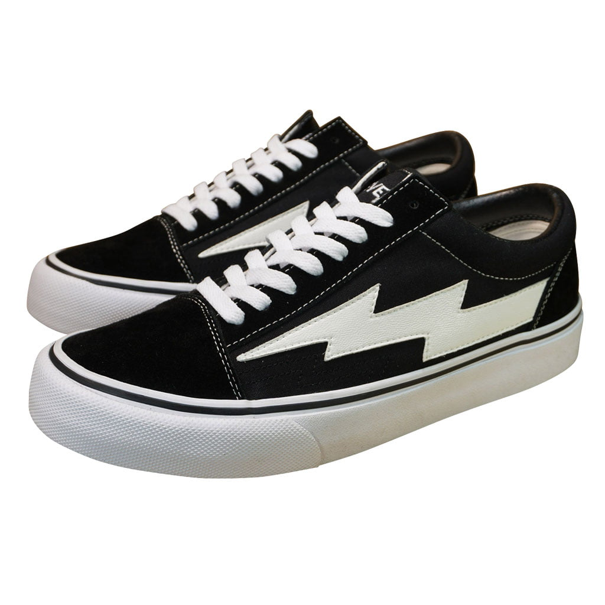
Ian Connor's Revenge X Storm Sneakers, inspired by Vans Old Skool Sneakers. Social media icon, Ian Connor, worked as Kanye West's stylist and modeled in Yeezy Season 2 and 3, worked as a visual collaborator for the A$AP Mob, and worked as Playboi Carti's manager and stylist before releasing these infamous shoes in 2017.
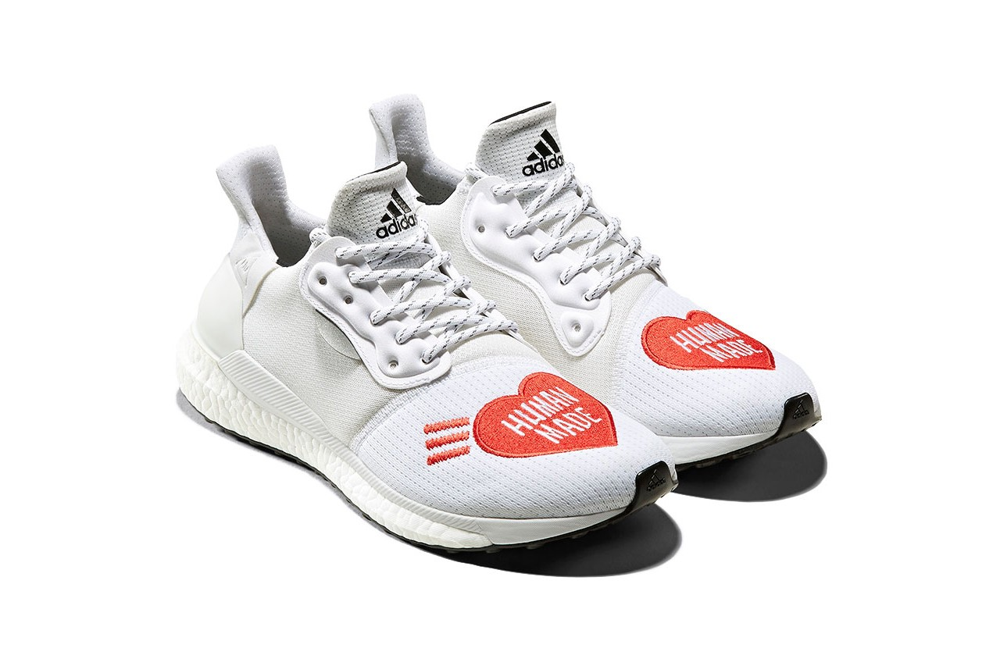
Adidas x Pharrell HUMAN MADE Solar Hu Glide Sneakers. Pharrell Williams and HUMAN MADE (Japanese fashion label founded by Nigo) collaborated with Adidas to release 3 silhouettes of this design on October 5th, 2019.
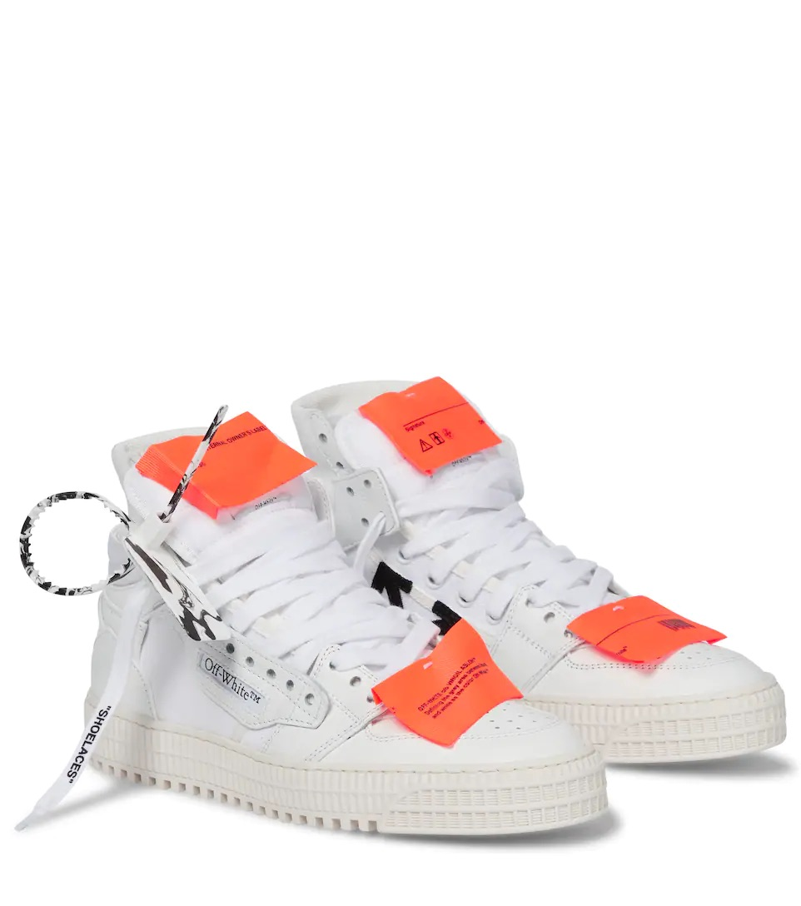
Off-White c/o Virgil Abloh 3.0 Court Leather High Top Sneakers. Off-White was founded originally as "PYREX VISION" by Virgil Abloh in Milan in 2012, and was rebranded to its current name shortly after. These sneakers were originally released July 10th, 2019.
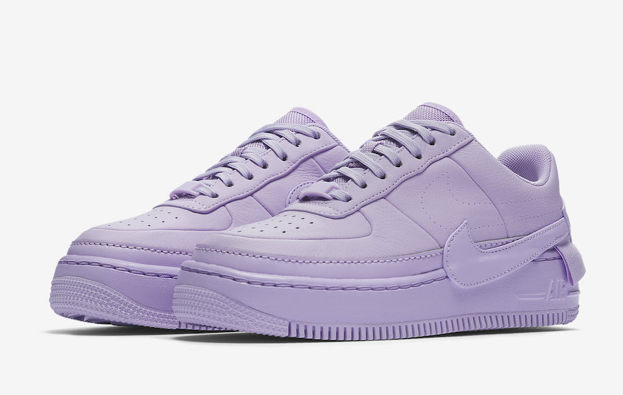
Nike Air Force 1 Jester XX 'Violet Mist' Sneakers. This sneaker was a reimagining of the classic Nike Air Force 1, with an elevated sole and off-center branding. This sneaker was originally released in April 2018 as part of the 1 Reimagined collection.
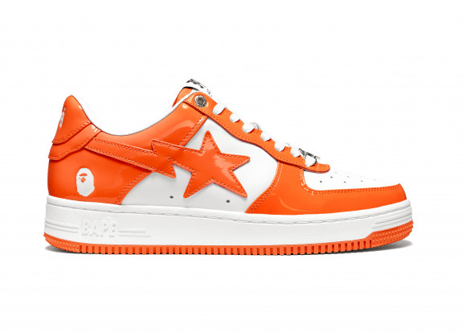
A Bathing Ape Bapesta Sneakers. A Bathing Ape is a Japanese fashion brand, specializing in street wear, founded by Nigo in 1993. The BAPE Bapesta sneaker was first released in 2000, drawing heavy resemblance to the iconic Nike Air Force 1.
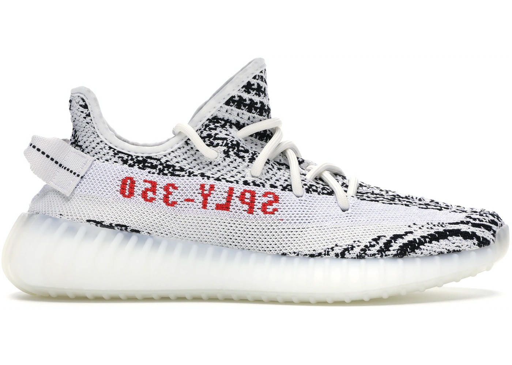
Adidas Yeezy Boost 350 V2 'Zebra' Sneakers. Kanye West delved into the world of sneakers first in 2009 with his Nike Air Yeezy 1 release, followed by a Louis Vuitton collection, Air Yeezy 2, then he teamed up with Adidas to create the Yeezy sneakers. This particular sneaker was originally released on February 25th, 2017.
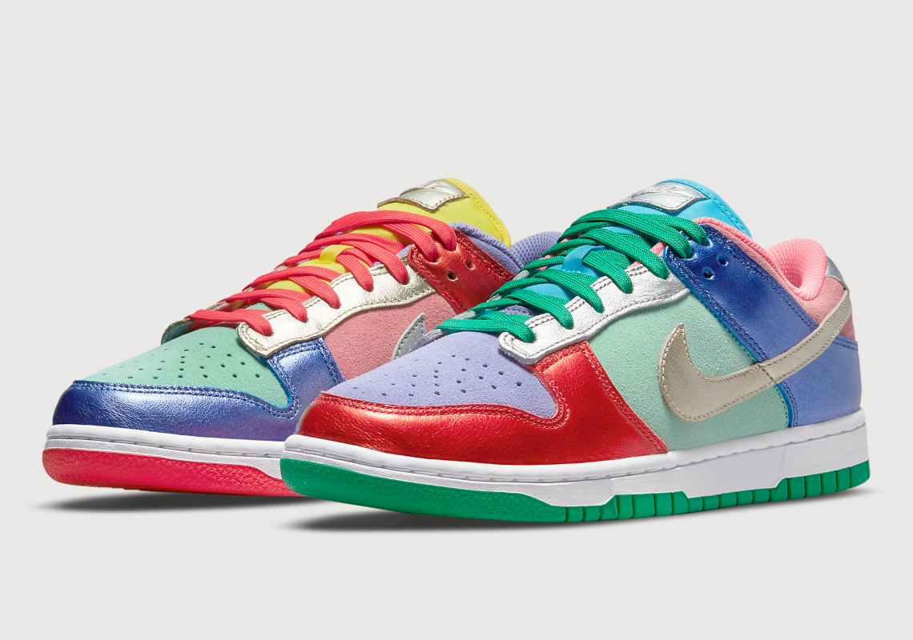
Nike Dunk Low 'Sunset Pulse' Sneakers. The dunk was originally created for the basketball court, but eventually took to the streets to become a sneaker staple. This sneaker was released on June 10th, 2021.
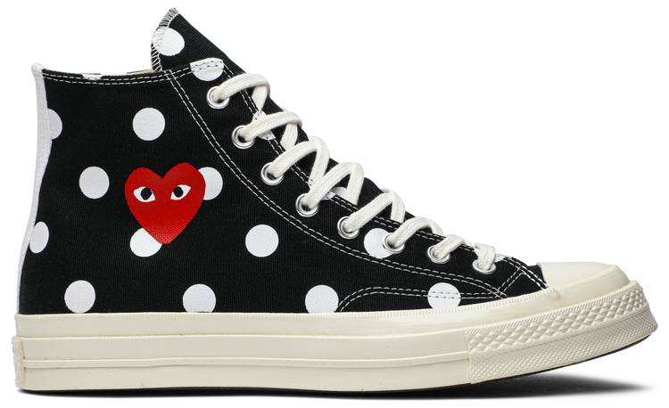
Conver Chuck Taylor All-Star 70s Hi Comme des Garcons PLAY Polka Dot Sneakers. CDG is a Japanese fashion label founded and headed out of Paris. The PLAY line is CDG's casual luxury/street wear line. This sneaker was released on October 5th, 2017.
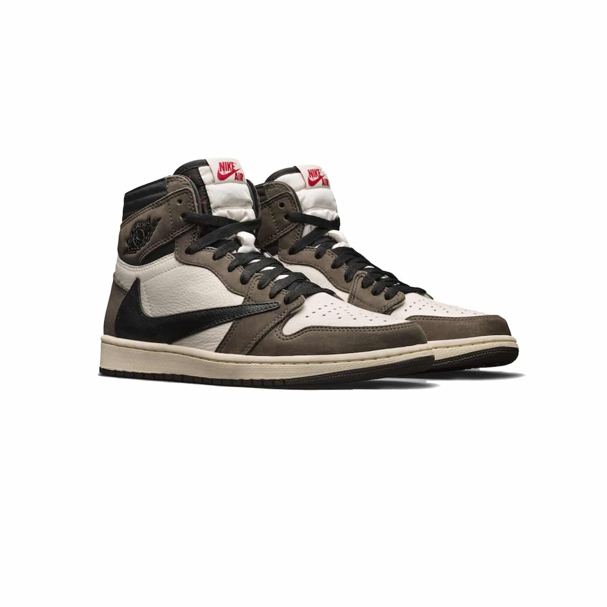
Nike Air Jordan 1 High 'Travis Scott' Sneakers. Travis Scott's take on Nike's classic Air Jordan 1, with a reverse swoosh and hidden pouch. This sneaker was originally released on May 10th, 2019.
 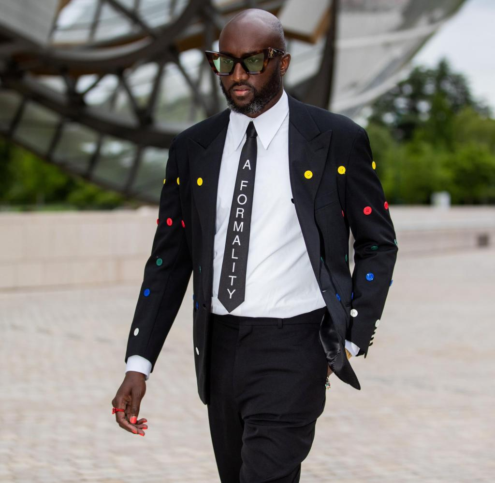
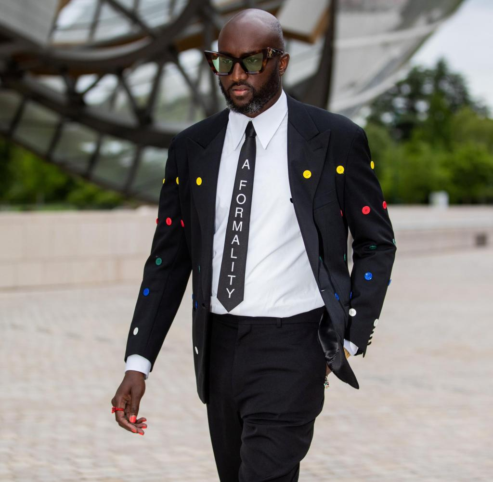